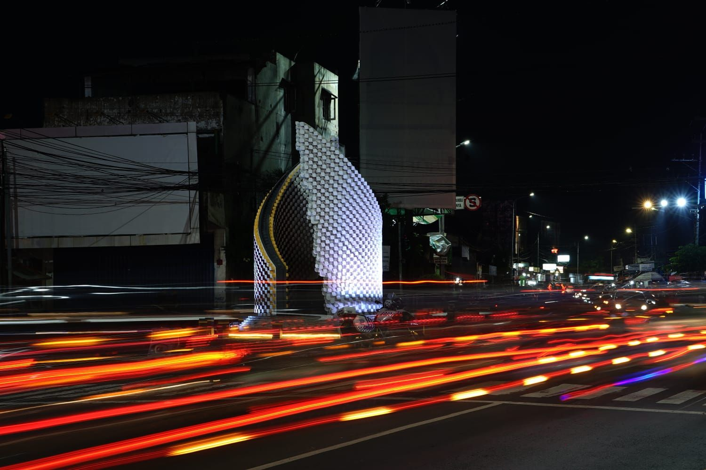

Sidoarjo dahulu dikenal sebagai pusat pemerintahan Kerajaan Janggala.[butuh rujukan] Pada masa kolonialisme Hindia Belanda, Sidoarjo merupakan bagian dari Kota Surabaya.[5] Nama daerahnya pada masa itu ialah Sidokare. Daerah Sidokare dipimpin oleh seorang patih bernama R. Ng. Djojohardjo, bertempat tinggal di kampung Pucang Anom yang dibantu oleh seorang wedana yaitu Bagus Ranuwiryo yang berdiam di kampung Pangabahan. Pada 1859, berdasarkan Keputusan Pemerintah Hindia Belanda No. 9/1859 tanggal 31 Januari 1859 Staatsblad No. 6, daerah Kabupaten Surabaya dibagi menjadi dua bagian yaitu Kabupaten Surabaya dan Kabupaten Sidokare. Sidokare dipimpin R. Notopuro (kemudian bergelar R.T.P. Tjokronegoro) yang berasal dari Kasepuhan. Ia adalah putra dari R.A.P. Tjokronegoro, Bupati Surabaya. Pada tanggal 28 Mei 1859, nama Kabupaten Sidokare yang memiliki konotasi kurang bagus diubah namanya menjadi Kabupaten Sidoarjo.[butuh rujukan] Setelah R. Notopuro wafat tahun 1862, maka kakak almarhum pada tahun 1863 diangkat sebagai bupati, yaitu Bupati R.T.A.A. Tjokronegoro II yang merupakan pindahan dari Lamongan. Pada tahun 1883 Bupati Tjokronegoro pensiun, sebagai gantinya diangkat R.P. Sumodiredjo pindahan dari Tulungagung tetapi hanya 3 bulan saja menjabat sebagai Bupati karena wafat pada tahun itu juga, dan R.A.A.T. Tjondronegoro I diangkat sebagai gantinya. Pada masa Pedudukan Jepang (8 Maret 1942–15 Agustus 1945), daerah delta Sungai Brantas termasuk Sidoarjo juga berada di bawah kekuasaan Pemerintahan Militer Jepang (yaitu oleh Kaigun, tentara Laut Jepang). Pada tanggal 15 Agustus 1945, Jepang menyerah pada Sekutu. Permulaan bulan Maret 1946, Belanda mulai aktif dalam usaha-usahanya untuk menduduki kembali daerah ini. Ketika Belanda menduduki Gedangan, pemerintah Indonesia memindahkan pusat pemerintahan Sidoarjo ke Porong. Daerah Dungus (Kecamatan Sukodono) menjadi daerah rebutan dengan Belanda. Tanggal 24 Desember 1946, Belanda mulai menyerang kota Sidoarjo dengan serangan dari jurusan Tulangan. Sidoarjo jatuh ke tangan Belanda hari itu juga. Pusat pemerintahan Sidoarjo lalu dipindahkan lagi ke daerah Jombang. Pemerintahan pendudukan Belanda (dikenal dengan nama Recomba) berusaha membentuk kembali pemerintahan seperti pada masa kolonial dulu. Pada November 1948, dibentuklah Negara Jawa Timur salah satu negara bagian dalam Republik Indonesia Serikat. Sidoarjo berada di bawah pemerintahan Recomba hingga tahun 1949. Pada 27 Desember 1949, sebagai hasil kesepakatan Konferensi Meja Bundar, Belanda menyerahkan kembali Negara Jawa Timur kepada Republik Indonesia Serikat, sehingga daerah delta Brantas dengan sendirinya menjadi daerah Republik Indonesia.Sidoarjo dahulu dikenal sebagai pusat pemerintahan Kerajaan Janggala.[butuh rujukan] Pada masa kolonialisme Hindia Belanda, Sidoarjo merupakan bagian dari Kota Surabaya.[5] Nama daerahnya pada masa itu ialah Sidokare. Daerah Sidokare dipimpin oleh seorang patih bernama R. Ng. Djojohardjo, bertempat tinggal di kampung Pucang Anom yang dibantu oleh seorang wedana yaitu Bagus Ranuwiryo yang berdiam di kampung Pangabahan. Pada 1859, berdasarkan Keputusan Pemerintah Hindia Belanda No. 9/1859 tanggal 31 Januari 1859 Staatsblad No. 6, daerah Kabupaten Surabaya dibagi menjadi dua bagian yaitu Kabupaten Surabaya dan Kabupaten Sidokare. Sidokare dipimpin R. Notopuro (kemudian bergelar R.T.P. Tjokronegoro) yang berasal dari Kasepuhan. Ia adalah putra dari R.A.P. Tjokronegoro, Bupati Surabaya. Pada tanggal 28 Mei 1859, nama Kabupaten Sidokare yang memiliki konotasi kurang bagus diubah namanya menjadi Kabupaten Sidoarjo.[butuh rujukan] Setelah R. Notopuro wafat tahun 1862, maka kakak almarhum pada tahun 1863 diangkat sebagai bupati, yaitu Bupati R.T.A.A. Tjokronegoro II yang merupakan pindahan dari Lamongan. Pada tahun 1883 Bupati Tjokronegoro pensiun, sebagai gantinya diangkat R.P. Sumodiredjo pindahan dari Tulungagung tetapi hanya 3 bulan saja menjabat sebagai Bupati karena wafat pada tahun itu juga, dan R.A.A.T. Tjondronegoro I diangkat sebagai gantinya. Pada masa Pedudukan Jepang (8 Maret 1942–15 Agustus 1945), daerah delta Sungai Brantas termasuk Sidoarjo juga berada di bawah kekuasaan Pemerintahan Militer Jepang (yaitu oleh Kaigun, tentara Laut Jepang). Pada tanggal 15 Agustus 1945, Jepang menyerah pada Sekutu. Permulaan bulan Maret 1946, Belanda mulai aktif dalam usaha-usahanya untuk menduduki kembali daerah ini. Ketika Belanda menduduki Gedangan, pemerintah Indonesia memindahkan pusat pemerintahan Sidoarjo ke Porong. Daerah Dungus (Kecamatan Sukodono) menjadi daerah rebutan dengan Belanda. Tanggal 24 Desember 1946, Belanda mulai menyerang kota Sidoarjo dengan serangan dari jurusan Tulangan. Sidoarjo jatuh ke tangan Belanda hari itu juga. Pusat pemerintahan Sidoarjo lalu dipindahkan lagi ke daerah Jombang. Pemerintahan pendudukan Belanda (dikenal dengan nama Recomba) berusaha membentuk kembali pemerintahan seperti pada masa kolonial dulu. Pada November 1948, dibentuklah Negara Jawa Timur salah satu negara bagian dalam Republik Indonesia Serikat. Sidoarjo berada di bawah pemerintahan Recomba hingga tahun 1949. Pada 27 Desember 1949, sebagai hasil kesepakatan Konferensi Meja Bundar, Belanda menyerahkan kembali Negara Jawa Timur kepada Republik Indonesia Serikat, sehingga daerah delta Brantas dengan sendirinya menjadi daerah Republik Indonesia.
.jpeg)
Setelah R. Notopuro wafat tahun 1862, maka kakak almarhum pada tahun 1863 diangkat sebagai bupati, yaitu Bupati R.T.A.A. Tjokronegoro II yang merupakan pindahan dari Lamongan. Pada tahun 1883 Bupati Tjokronegoro pensiun, sebagai gantinya diangkat R.P. Sumodiredjo pindahan dari Tulungagung tetapi hanya 3 bulan saja menjabat sebagai Bupati karena wafat pada tahun itu juga, dan R.A.A.T. Tjondronegoro I diangkat sebagai gantinya. Pada masa Pedudukan Jepang (8 Maret 1942–15 Agustus 1945), daerah delta Sungai Brantas termasuk Sidoarjo juga berada di bawah kekuasaan Pemerintahan Militer Jepang (yaitu oleh Kaigun, tentara Laut Jepang). Pada tanggal 15 Agustus 1945, Jepang menyerah pada Sekutu. Permulaan bulan Maret 1946, Belanda mulai aktif dalam usaha-usahanya untuk menduduki kembali daerah ini. Ketika Belanda menduduki Gedangan, pemerintah Indonesia memindahkan pusat pemerintahan Sidoarjo ke Porong. Daerah Dungus (Kecamatan Sukodono) menjadi daerah rebutan dengan Belanda. Tanggal 24 Desember 1946, Belanda mulai menyerang kota Sidoarjo dengan serangan dari jurusan Tulangan. Sidoarjo jatuh ke tangan Belanda hari itu juga. Pusat pemerintahan Sidoarjo lalu dipindahkan lagi ke daerah Jombang. Pemerintahan pendudukan Belanda (dikenal dengan nama Recomba) berusaha membentuk kembali pemerintahan seperti pada masa kolonial dulu. Pada November 1948, dibentuklah Negara Jawa Timur salah satu negara bagian dalam Republik Indonesia Serikat. Sidoarjo berada di bawah pemerintahan Recomba hingga tahun 1949. Pada 27 Desember 1949, sebagai hasil kesepakatan Konferensi Meja Bundar, Belanda menyerahkan kembali Negara Jawa Timur kepada Republik Indonesia Serikat, sehingga daerah delta Brantas dengan sendirinya menjadi daerah Republik Indonesia.
Keberadaan semburan lumpur Sidoarjo atau lumpur Lapindo merupakan sebuah peristiwa bersejarah yang telah melalui proses panjang sejak pertama kali terjadi pada tanggal 29 Mei 2006 dan hingga kini belum menunjukkan tanda-tanda akan berhenti. Dikutip dari laman Pusat Pengendalian Lumpur Sidoarjo Kementerian PUPR, titik semburan lumpur ini berada di Desa Siring, Kecamatan Porong, Kabupaten Sidoarjo, Jawa Timur, sekitar 200 meter dari sumur pengeboran gas Banjar Panji 1 milik PT Lapindo Brantas di Desa Renokenongo, Kabupaten Sidoarjo. Bencana ini diperkirakan berlangsung dalam jangka waktu yang lama, beberapa ahli geologi memperkirakan bahwa semburan ini bisa terus terjadi selama lebih dari 30 tahun. Hal ini berbeda dengan bencana alam lainnya yang umumnya berlangsung dalam waktu singkat, seperti banjir yang biasa terjadi dalam hitungan hari atau minggu, tsunami dalam hitungan jam, longsor atau angin topan dalam hitungan menit, dan gempa bumi dalam hitungan detik. Semburan lumpur panas dari pertambangan milik PT Lapindo Brantas ini telah menjadi bencana nasional pada tahun 2006. Ribuan masyarakat menjadi korban karena harus meninggalkan rumah mereka yang terdampak lumpur. Semburan pertama lumpur Lapindo tersebut tepat dua hari setelah gempa bumi di Yogyakarta. Semburan lumpur panas tersebut kini telah membentuk sebuah kawah. Bencana Lumpur Lapindo mendorong pemerintah saat itu untuk turun tangan. Lumpur Lapindo juga telah memakan korban sosial dan ekonomi. Tercatat, sebanyak 8 desa terdampak yang mencakup wilayah Kecamatan Jabon, Kecamatan Porong, dan Kecamatan Tanggulangin. Baca artikel detikjatim, "18 Tahun Tragedi Lumpur Lapindo: Ini Sejarah dan Kronologinya" selengkapnya https://www.detik.com/jatim/berita/d-7362966/18-tahun-tragedi-lumpur-lapindo-ini-sejarah-dan-kronologinya. Download Apps Detikcom Sekarang https://apps.detik.com/detik/
.jpeg)